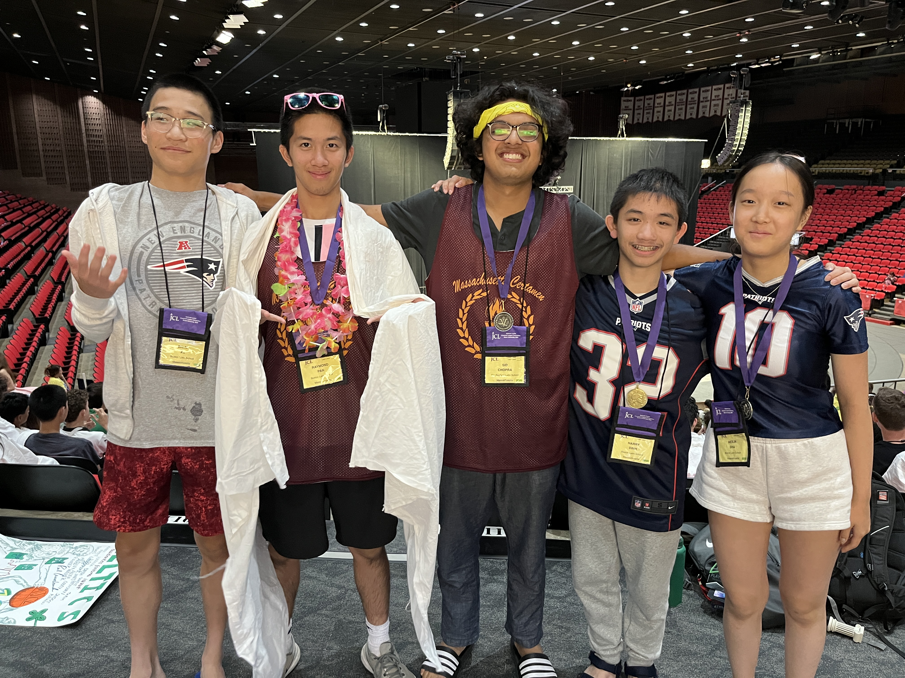
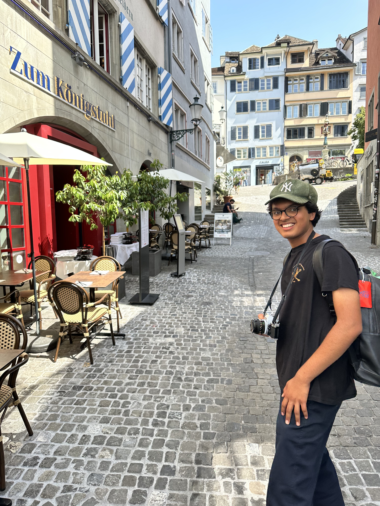
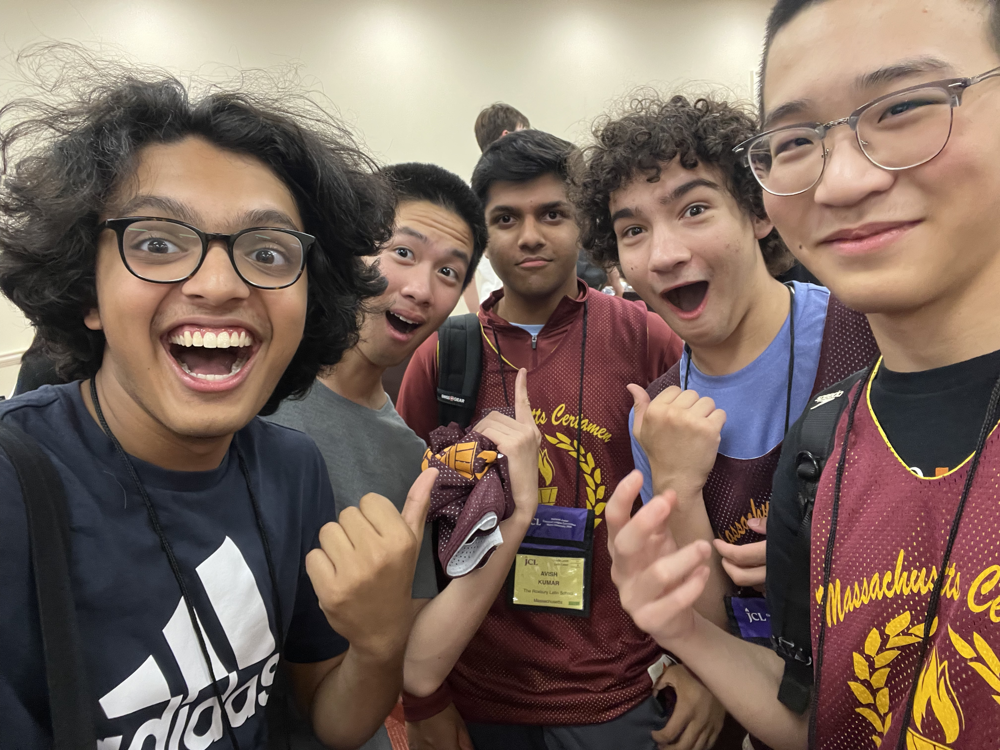

Meet Sid Chopra
Roxbury Latin · Intermediate Certamen National Champion · Running for 2nd VP


Roxbury Latin
This will be Sid's 2nd State Convention and, this summer, his 2nd National Convention.
Lost Worlds Institute
President of a linguistics and language preservation organization called Lost Worlds Institute, in which we organize youth around the cause of preserving endangered languages.
Classics Club Leader
A leading force behind the Roxbury Latin Classics Club. Sid has begun helping develop syllabi and study schedules for students getting into Certamen and JCL as a whole.
The S.I.D.E. Platform
I am running on four campaign pillars:
Service Expansion
- Coordinating new service initiatives across chapters
- Stronger MassJCL presence in NJCL service - increasing presence in the community service contest
- Create a statewide service calendar so chapters know about opportunities well in advance
Chapters in Service
- Connect large and small chapters so no chapter is under-resourced
- Chapter buddy system where experienced chapters mentor smaller chapters in service (hosting events, goods collection, fundraising, etc.)
- Ensure every chapter has a realistic way to contribute to statewide service efforts
From Community for Spirit
- Training for spirit ahead of time
- Allow members of JCL to contribute to what spirit will be for Nationals - pitch in ideas of attire/merch, songs/dances, or general ideas and themes
- Community input raises interest and engagement for everyone
Spirit Events
- Time efficient spirit training for Nationals
- ENERGY for Spirit Party - through local clubs' social media, through JCL network, through the "D" above
- Bigger Toga Parade with better promotion ahead of time
Theme: Revolutionary
With America's 250th this year, let's pick the right S.I.D.E. on the Revolution! My campaign runs under a cohesive structure - as detailed below, the Spirit Party, Spirit itself, and Service all tie together under our Revolutionary Massachusetts identity!
Spirit Party
Boston Common
Boston Common, where we can celebrate our Massachusetts identity and gear up our patriotism ahead of Nationals. We might even throw a bit of a Tea Party for ourselves.
Spirit Dances
Dual-Theme Dress-Up
Cocked Revolutionary hats, flags, bandanas, comically large tea bags, and more!
Toga Parade
Bigger and Better Promoted
A group of American revolutionaries and a group of Roman ones, highlighting our Massachusetts spirit and patriotism but blending it with our love for the Classics.
Serving Massachusetts
Boston is home to 16 official historical sites along the Freedom Trail. But the trail itself, and many sites along it, have become subject to wear and constant repair. We, as MassJCL's youth, can fix that.
If elected, I will introduce sustained donation, volunteering, and partnership programs with civic and historical preservation organizations, relating to my preservation skills through Lost Worlds Institute.
National Parks of Boston
Freedom Trail Preservation Fund
YouthBuild Boston
MassJCL at Nationals!
I am keen on elevating the energy we built last year at National Convention while making it cohesive with our overall goals: the Spirit Party, Spirit itself, and Service all under the same umbrella. This is why S.I.D.E. matters!

This is my second Nationals. If you vote for me, I will be there as your 2nd VP, making spirit even bigger and service even stronger.
Pick the right S.I.D.E.
Let's emphasize the Mass in MassJCLers. With America's 250th this year, let's pick the right S.I.D.E. on the revolution!
Picking the right S.I.D.E. begins with you siding with me as your 2nd VP.
I am so excited to meet you all at States! Feel free to come up to me any time, ask any questions about my campaign, and let's get to share our love of JCL. See you at States!
S.I.D.E. with Sid!